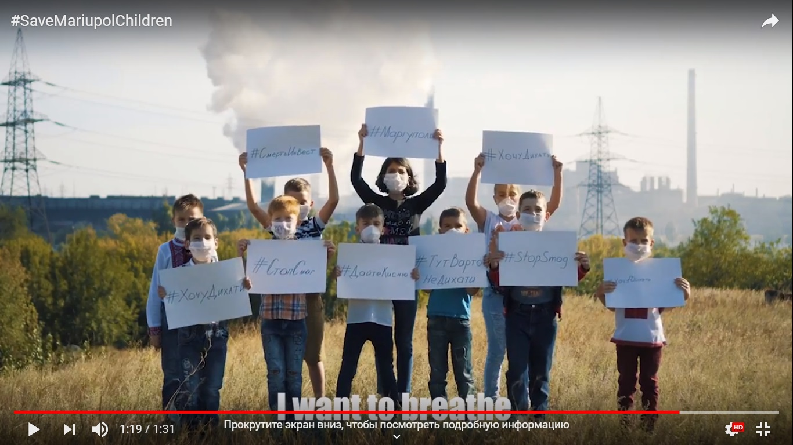

Міністерство екології України майже ніяк не реагує на звернення громадян, установлюючи норми викидив у 50 разів вищі, ніж в інших містах та країнах.
Українці, підтримайте!», - мешканці Маріуполя малюють постери та знімають відео до флешмобу #ЯХочу Дихати, який заплановано провести під час святкувань Дня міста 29 вересня.
Активісти акції прагнуть привернути увагу «високих» гостей, які з’їдуться подивитись на парадне завершення реконструкції центру міста, до безпрецедентних викидів, якими комбінати групи «Метінвест» Ріната Ахмєтова отруюють мешканців Маріуполя впродовж останніх двох тижнів. Особисте запрошення на флешмоб отримав міністр екології Остап Семерак, який звинуватив громаду міста у пасивності – в той час, як екологічні перевірки належним чином не здійснюються, а норми викидів для маріупольських меткомбінатів підвищуються самим Міністерством екології без громадських обговорень.
Сподіваємось, що весь світ дізнається, що Маріуполь потребує допомоги.
Ми не зупиняємося в боротьбі за майбутне своїх дітей.
Ми намагаємося говорити, але нас не чують!
Ми хочемо спати з відкритими вікнами.
Ми хочемо відпочивати на природі.
Ми хочемо купатися в нашому морі.
Ми хочемо дихати.
У місті - Екологічна Катастрофа!
Почуйте нас!!!
Наші діти хочуть жити!